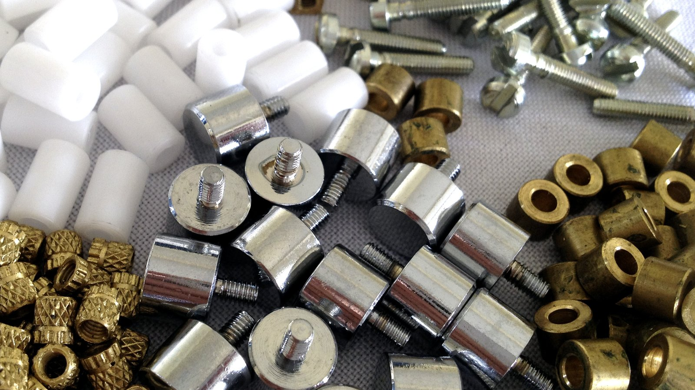

Fabricação própria
Produzimos em nossa estrutura, com controle total sobre material, acabamento e padrão de qualidade.

Fabricamos e fornecemos roldanas, gonzos, rolamentos, cadeados e uma linha completa de acessórios para ferragistas, serralherias e indústria — além de peças usinadas sob demanda.

A Tornomec é fabricante de acessórios para ferragista e usinagem. Produzimos uma linha completa de roldanas para portões, gonzos, rolamentos, roletes, cadeados e peças de acabamento — atendendo ferragistas, serralherias e a indústria com qualidade e regularidade.
Com fabricação própria e usinagem de precisão, também produzimos peças sob demanda, torneadas e fresadas de acordo com a necessidade de cada cliente.
Unimos fabricação própria, usinagem de precisão e atendimento técnico para entregar o acessório certo, com qualidade e no prazo.
Produzimos em nossa estrutura, com controle total sobre material, acabamento e padrão de qualidade.
Peças torneadas e fresadas sob medida, fabricadas conforme o desenho e a necessidade do cliente.
Roldanas com canaleta, cubo de aço, nylon e zincadas, roletes, gonzos e acessórios em um só lugar.
Componentes resistentes ao uso intenso, com rolamentos e materiais selecionados para durar.
Estoque das principais linhas para abastecer o ferragista com agilidade e regularidade.
Ajudamos a identificar a peça certa para cada aplicação, com um time que entende do produto.
Do trilho ao acabamento — roldanas, gonzos, rolamentos, cadeados e muito mais, com a opção de usinagem sob medida.
Com canaleta, cubo de aço, nylon e zincadas, para portões de correr.
Gonzos com chumbador, para parafusar, simples e articuladores.
Olhos, kits de núcleo, kits de rolamento e batentes.
Peças torneadas e fresadas fabricadas sob medida.
Abastecemos lojas e ferragistas com as linhas de maior giro, em pronta entrega e com regularidade de fornecimento.
Roldanas, gonzos, roletes e acessórios para a montagem de portões de correr e basculantes com qualidade.
Componentes e peças de reposição que exigem precisão, resistência e disponibilidade contínua.
Para quem precisa de uma peça específica: fabricamos sob desenho, em aço, latão, nylon e outros materiais.
Precisão que gira, qualidade que dura. Acessórios feitos para o trabalho do dia a dia.— Tornomec
Fale com a Tornomec e receba atendimento técnico para encontrar a solução certa para a sua aplicação.